Vanna Enterprise Demos

The user is able to alert an admin about an incorrect response. This prevents user frustration that they've noticed an error but don't have a way to fix it.

The user is able to train the model if they like the response they've received. This helps generate the exact same response to the question every future time. It prevents the frustration that if starting from scratch, the LLM could generate a different response.